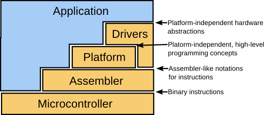

Every PIC architecture libraries follows the same concept:
This way you can choose the abstraction level of your application. You can use plain assembly or you can write your application in a platform independent manner allowing your program to compile on different platform. You can even use different techniques in different parts. It's up to you to choose the most efficient way to solve you problem!
Let's see an example
example1.e
library example1;
/*
* Using assembly
*/
use microchip.pic18;
/*
* Defining a type to notate a byte
*/
type uint8 = unsigned 8 bits;
main(){
/*
* Variable definition will allocate the memory space during linking
*/
uint8 d1;
// Set d1 to zero
CLRF(&d1);
/*
* &d1 denotes the memory address of d1, as the operation needs the address
* not the variable itself
*/
// Set 5 to d1
MOWLW(5);
MOVWF(&d1);
}
example2.e
library example2;
/*
* Using a platform definition. The actual platform implementation
* will be decided during linking.
*/
use e.platform;
/*
* The type uint8 is defined in e.platform
*/
main(){
/*
* Variable definition will allocate the memory space during linking
*/
uint8 d1;
// Set d1 to zero
d1 = 0;
/*
* The actual implementation of the assignment operator is selected during linking
*/
// Set 5 to d1
d1 = 5;
}
Unlike other toolchains, the language e contains its own linker scripting notation as built-in structures. Linking cannot be platform-independent.